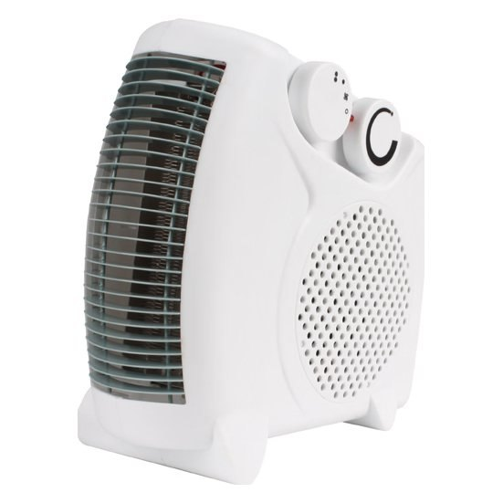
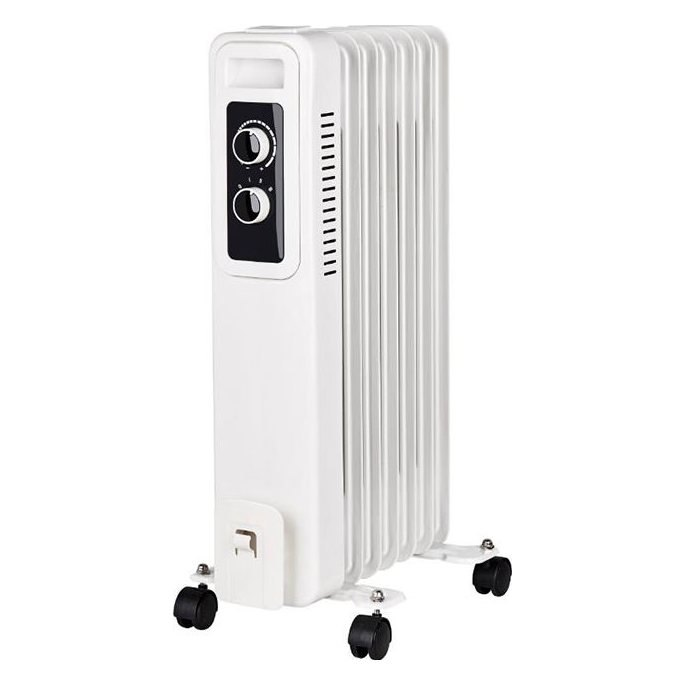

Start / Klima, Heizung & Wasser / Rohrventilator 150 mm (Abluft, Kanallüfter)

Abbildung ähnlich – zeigt den Produkttyp.
Klima, Heizung & Wasser
Rohrventilator 150 mm (Abluft, Kanallüfter)
Leiser Kanalventilator für Bad, Küche und Hydroponik.
Der Rohrventilator fördert bis ca. 720 m³/h bei 150 mm Anschluss und wird im Kanal montiert. Gehäuse aus ABS, Kugellager und Thermoschutz sind Qualitätsmerkmale.
Technische Daten
| Durchmesser | 150 mm |
|---|---|
| Luftmenge | 720 m³/h |
| Spannung | 220–240 V |
| Gehäuse | ABS |
| Zolltarifnummer (HS) | 84145935 |
EU-Normen und Vorschriften
GPSR (EU) 2023/988Produktsicherheit, EU-Verantwortlicher PflichtLVD 2014/35/EUNiederspannungsrichtlinie, CE-KennzeichnungEMC 2014/30/EUElektromagnetische VerträglichkeitRoHS 2011/65/EUStoffbeschränkungElektroG / WEEERegistrierung bei stiftung ear(EU) 327/2011Ökodesign für Ventilatoren
Weitere Produkte dieser Kategorie

Mobiles Klimagerät 2,6 kW (Monoblock)Mobiles Monoblock-Klimagerät zum Kühlen, Lüften und Entfeuchten von Büro-, Container- und Baustellenräumen.
Split-Klimagerät 3,5 kW (Wandgerät, Inverter, R32)Fest installiertes Inverter-Split-Klimagerät mit Wand-Innengerät zum Kühlen und Heizen von Büros, Besprechungs- und Pausenräumen sowie Baustellenunterkünften.
Diesel-Bauheizer 20-30 kW (indirekt befeuert, mit Abgasrohr)Mobiler, indirekt befeuerter Diesel-/Kerosin-Heizlüfter mit Abgasführung für Bauteiltrocknung und Winterbau.
Elektro-Bauheizer 9 kW (400 V)Abgasfreier 3-stufiger Elektro-Heizlüfter 3/6/9 kW an 400 V (CEE 16 A) für Trocknung und Baustellenheizung.
Gas-Heizkanone 30 kW (Propan, direkt befeuert)Mobile, direkt befeuerte Propan-Heizkanone mit Gebläse zum schnellen Aufheizen großer, gut belüfteter Hallen, Rohbauten und Zelte.
Schmutzwasser-Tauchpumpe 1,1 kW
Klarwasser-Tauchpumpe 0,75 kW (230 V)B. zum Umpumpen, Absenken und Bewässern.
Benzin-Motorpumpe 3 Zoll (Wasserpumpe, 6,5-7,5 PS)Netzunabhängige, selbstansaugende 3-Zoll-Motorpumpe mit 4-Takt-Benzinmotor für große Wassermengen.
Bautrockner (Kondensationstrockner) 50 l/TagRobuster Kondensationstrockner für die Bau- und Wasserschadentrocknung mit 50 l/Tag Entfeuchtungsleistung.
Fensterabdichtung für mobile Klimageräte (Set aus Polyester mit Reißverschluss und Klettband, ca. 400 cm Umlauf)Textile Fensterabdichtung mit Reißverschluss und Klettband, die den Abluftschlauch eines mobilen Klimageräts durch das Fenster führt und Warmluft wie Insekten draußen hält.
Mini-Kondensatpumpe für Klimageräte und Bautrockner (230 V, Tankpumpe ca. 1 l)Kompakte Tankpumpe, die Kondensat von Split-Klimageräten und Entfeuchtern automatisch nach oben oder zur Entwässerung fördert, wenn kein Gefälle möglich ist.
Klima-Montageset 5 m (isolierte Kupfer-Doppelleitung 1/4 + 3/8 Zoll mit Bördelmuttern)Fertig isoliertes Kupferrohrpaar für die Kältemittelleitung zwischen Innen- und Außengerät eines Split-Klimageräts, 5 m lang.
Pumpen-Anschlussset: Flachschlauch 20 m mit Storz-C-Kupplungen (2 Zoll / 52 mm)Fertig konfektionierter, flach faltbarer Druckschlauch mit Storz-C-Kupplungen für Tauch- und Motorpumpen, 20 m lang.

Keramik-Heizlüfter 2000 W (PTC, Kippschutz)Kompakter Heizlüfter mit PTC-Keramikelement für schnelle Raumwärme.

Elektro-Ölradiator 2500 W (9–11 Rippen)Geräuschlose Dauerwärme durch Ölfüllung, mit Thermostat.

Stahl-Plattenheizkörper Typ 22, 600 mm hochWarmwasser-Flachheizkörper mit zwei Platten und Konvektorblechen.
Elektro-Durchlauferhitzer 3,5–5,5 kW (Dusche/Küche)Kompakter Kleindurchlauferhitzer für Sofort-Warmwasser.
Gartenpumpe 800–1000 W (Oberflächenpumpe, selbstansaugend)Selbstansaugende Kreiselpumpe für Bewässerung und Regenwasser.
Elektrischer Handtuchheizkörper 500 W (Bad, mit Thermostat)Wandmontierter Elektro-Badheizkörper mit Thermostat.
Programmierbarer Raumthermostat (WLAN, 230 V, 16 A)Wochenprogramm-Thermostat für Heizung oder Fußbodenheizung.